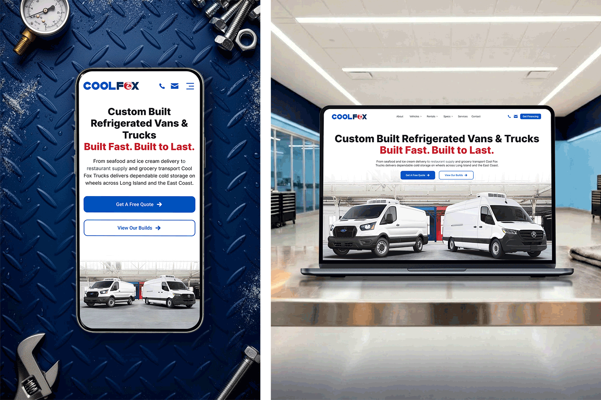
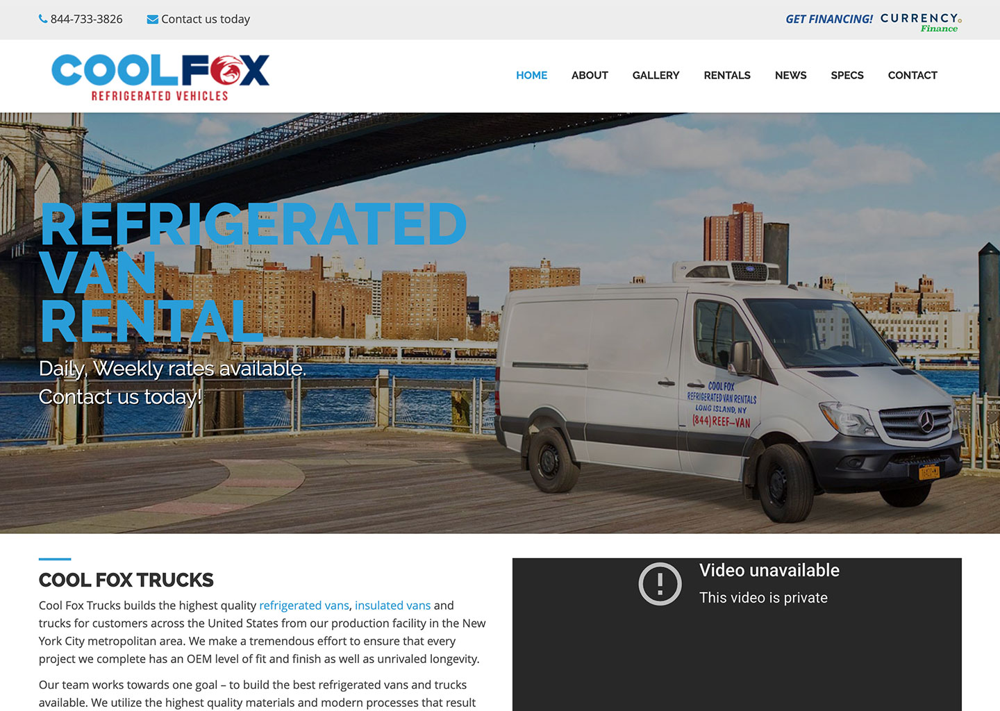
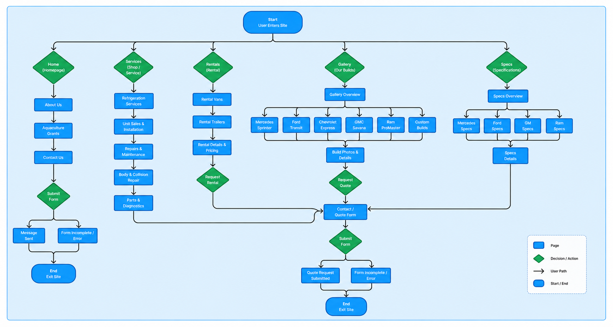
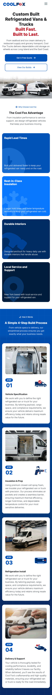
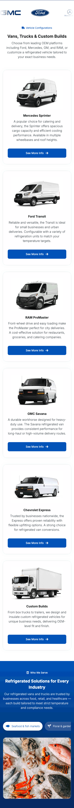
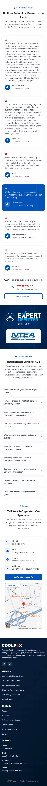

Objective
Modernize the Cool Fox website to create a clearer customer experience, improve navigation, strengthen trust, and build a stronger technical and SEO foundation for future growth.
The project focused on transforming an outdated website into a modern digital experience through improved information architecture, navigation, messaging, SEO, and service discovery while better reflecting the quality of the company and its products.

Cool Fox Refrigerated Vehicles builds custom refrigerated vans, trucks, and trailers for businesses across the Northeast. The project focused on redesigning the company's website to create a more modern, user-friendly experience while improving navigation, content organization, service visibility, and customer engagement.
Beyond the visual redesign, the site was rebuilt to better support business goals, strengthen search visibility, and provide customers with clearer pathways to explore vehicle options, learn about services, and contact the business.
Before exploring design solutions, I reviewed the existing website, spoke with the business owner, and evaluated how customers interacted with the experience. The goal was to identify usability issues, content gaps, and opportunities to better support both customer needs and business objectives.
The company had built a strong reputation for custom refrigerated vans, trucks, and trailers, but the website did not reflect the quality of the business. Important information was difficult to prioritize, navigation was harder to browse than it needed to be, and customers had limited guidance around services, build quality, and next steps.
The challenges became even more noticeable on mobile. Important content was tucked behind a narrow menu structure that made navigation feel crowded and harder to browse, especially when moving between vehicle categories, rentals, and specifications.
The homepage relied on a rotating carousel that cycled through multiple marketing messages without providing a clear call to action. Visitors could view information, but there was no obvious next step for requesting a quote, exploring vehicles, or contacting the business.
Weak spacing and visual hierarchy made important information harder to scan and prioritize. Important information competed for attention, making it difficult for users to quickly understand vehicle options, services, and next steps.
Mobile navigation lacked the structure needed to quickly browse deeper content. Important pages were tucked behind a narrow navigation experience that increased friction when moving between categories and specifications.
Limited educational content made it difficult for customers to understand services, capabilities, and the vehicle build process. Visitors lacked supporting information that explained the company's expertise and differentiators.
Testimonials, certifications, and industry affiliations were not prominently featured throughout the experience. Credibility indicators existed but were not positioned where they could effectively reinforce trust and confidence.
The contact experience added friction without aligning with how most customers reached the business. The website emphasized a traditional form rather than direct communication methods preferred by potential customers.

Mapping the user flow helped identify how visitors moved through the site and where navigation, content discovery, and conversion opportunities could be improved. The updated experience introduced clearer pathways between vehicle options, services, educational content, and contact points, making it easier for users to find information and take the next step.

The redesign focused on solving the navigation, content, and usability issues identified during the audit while creating a stronger foundation for future growth. Rather than simply modernizing the visual design, the goal was to improve how customers discovered information, understood the company's capabilities, and moved toward making contact.
The hero was redesigned to create a clearer entry point into the experience. A focused value proposition, stronger hierarchy, and dedicated calls to action helped visitors quickly understand the company's offerings and next steps.
Navigation was reorganized with clearer content groupings, hover states, and visual cues to make deeper content easier to discover while keeping contact actions accessible throughout the experience.
The mobile navigation was rebuilt with cleaner hierarchy, improved spacing, and expandable drill-down menus, allowing users to move between categories, rentals, specs, and services more efficiently.
Key differentiators such as build quality, insulation, lead times, and local support were surfaced more prominently to help visitors quickly understand the company's value proposition.
The custom build process was simplified into four clear stages, helping visitors understand project expectations and how vehicles move from consultation through delivery.
Industry-specific pathways were introduced to connect visitors with the vehicle solutions most relevant to their operational needs and use cases.
A dedicated FAQ section was added to answer common questions earlier in the journey, reducing uncertainty and helping visitors find information faster.
Dedicated service pages were created to highlight repairs, maintenance programs, diagnostics, and ongoing support offerings, making these services easier to discover.
Testimonials, certifications, and industry affiliations were integrated throughout the experience to reinforce credibility and build confidence in the company's expertise.
The contact experience was redesigned around the communication methods customers already preferred, making it easier to connect with the business and access location information.

Use the toggle switch below to compare the original and redesigned experience. Scroll inside the image area to explore the full page and see how the layout, hierarchy, and enrollment flow evolved throughout the redesign.

This walkthrough highlights how the experience was optimized for mobile through improved navigation, clearer content hierarchy, and more accessible pathways to key information. The redesigned experience makes it easier for users to browse vehicle options, explore services, find answers to common questions, and contact the business from any device.



By improving content hierarchy, simplifying navigation, and introducing more educational and trust-building content, the redesigned experience made it easier for customers to discover information and engage with the site. Clearer pathways between vehicle options, services, FAQs, and contact opportunities encouraged deeper exploration, resulting in higher engagement, more page views, and increased views per user.
This project demonstrated how thoughtful UX decisions can create value for both customers and the business. By combining stakeholder insights, content strategy, interaction design, and front-end development, the redesign transformed an outdated website into a more engaging and effective digital experience.
The final solution improved how customers discover information, evaluate services, and interact with the business while creating a scalable foundation that can continue to support future growth.